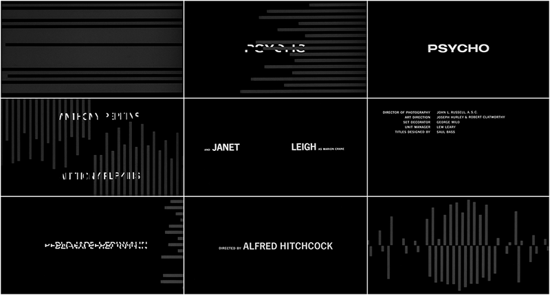

Emotions play a vital role within design. They are what makes the audience react. This is no different for design within the world of film. Saul Bass was the pioneer of utilising the title sequences (Famous Graphic Designers, 2020) to set the tone and emotion for the rest of the film, this is particularly evident in his partnership with the acclaimed director, Alfred Hitchcock. Bass led the move from static to kinetic typography which was the beginning of evoking emotions before the films narrative even began.
Saul Bass was an award-winning American graphic designer who pioneered the design of modern title sequences. He is most prominently recognised for his work within corporate logos, film posters and mainly, film title sequences. After, attending and graduating from the James Monroe High School, Bass was offered a fellowship to the Arts Student League in Manhattan. Once he had completed his studies, he began to work as a freelancer before he established his own practice, Saul Bass & Associates in 1952. (FamousGraphicDesigners.org, 2020)
Whenever Otto Preminger approached Bass, he wouldn't have been aware that it would led to his big break within the film industry. It was here that Bass recognised the potential that title sequences held; if incorporated with the correct visual and aural elements, he would be able to evoke the desired emotion of the director onto the audience.
Saul Bass may be best know for his work within the title sequences of films, but this all stems back to his acclaimed logos. Bass branded for a wide range of major companies, including Bell, Kleenex, and AT&T. He soon became synonymous for creating minimalist logos with clean and pensive designs. The average lifespan of one of Saul Bass' logos is 34 years, with some still being used today. (Bigman 2012)
"Logos made to last"
The new field of motion graphics was created after type and image were combined with motion. It began within the abstract films of 'pure cinema' with experimentations in animation and breaking away from linear storytelling and film techniques.
Saul Bass' work for director Otto Preminger's film 'The Man with the Golden Arm' (1955), was one of the first feature films to introduce this type of motion. This transformed how information was communicated from screen to viewer. (Meggs and Purvis, 2016)
Motion graphics was born following the amalgamation of both type and image with motion. This was the ground work for the emergence of a new style of typography, kinetic. Put simply, it is the creation of movable type. Lettering is manipulated to appear to the viewer as if it is moving at different speeds, being stretched or squeezed, fly or move. The main motive behind it, is to add emphasis while creating tone and emotion. (Design Shack, 2015)
Saul Bass was the first to see the potential and introduce this form of graphics into the film industry, breaking the status quo of static images, which has transformed how information is communicated through the screen to the audience, resulting in a more prominent emotional response.
"This work stemmed in part from a desire to have the opening credits set the stage for the film by establishing a mood, rather than simply conveying the information of the credits"
(Researchers Johnny C.Lee, Scott E.Hudson, Jodi Forlizzi, 2015)
From 1958 to 1960, Bass worked with Hitchcock to create three title sequences, which were all successful in evoking emotions, mainly of anxiety and fear. This was predominantly down to kinetic typography and all highlight the style and features of Bass' work within motion graphics. Saul Bass worked as a visual consultant for Hitchcock, where he would design credit sequences. (Horak, 2014)
While their relationship obviously worked, with Bass creating iconic sequences, there were rumours that his talent didn't stop there. The shower scene in 'Psycho' is perhaps one of the most jarring and emotionally shocking film scenes of its time, and it can be linked back to Bass. He is rumoured to have created storyboards for and edited the shower sequence, but Hitchcock downplayed the height of the role Bass had in the scene.
Vertigo (1958) was the first of Hitchcock's films that Bass worked on and follows a retired detective, whose fear of heights caused the death of a fellow police officer and young girl. Hitchcock creates a cycle of madness and lies (Rotten Tomatoes, 2021) which Bass hints towards with the design of the title sequence.
From the very beginning, Bass' design concepts have the audience feeling uncomfortable with the combination of unsettling music and visuals. The placement of the first two names are key, by the lips and eyes. By doing so, Bass subtly hints that that maybe woven within the narrative. Incorporating type and motion could be difficult, but Bass' font choice allows the viewer to still see the visuals behind it.
Using design, Bass evokes feelings of foreboding and discomfort, but also gains the audience's attention. The combination of the eye close up, colour change to red and the motion of the graphics communicates to the audience the feelings that the main character would have with Vertigo, particularly being off balance and unsure. The spinning spiral would almost put the audience into a trance, due to the change of colour, shape, and motion, similar to a kaleidoscope. This would evoke a sense of foreboding and uncertainty, as it works with the unsettling score to hook the audiences attention while simultaneously making them emotionally uncomfortable.
The colours slowly change back to red with the shape of the spiral back to resembling an eye, when it cuts back to Novak's eye. She is still shrouded in a sheet of red and continues to look around in fear until the title sequence ends. Bass uses simple imagery and movement, but still manages to evoke emotions of fear, uncertainty, and anxiousness through the design of his title sequence.
This was his main aim in setting the tone for the rest of the film, "I aim to set up the audience for what's coming, make them expectant". (Saul Bass ac.1958).
Released in 1960, and the last Hitchcock film Bass collaborated on, Psycho was one of the most controversial films of its time. (Today I Found Out, 2015) The infamous film sees a young woman stopping at Bates Motel and meets a polite man with dark secrets. (Rotten Tomatoes, 2021)
Bass uses his design styles and tricks to subtly narrate to the audience what type of emotions they could be feeling during the film that's about to follow. Straight away the audience is put on high alert once the ominous soundtrack begins and rectangular shapes fly in from the side at high speed. This surprises the viewer, but also doesn't give them the opportunity to calm as it keeps going. The swiping back and forth, splitting the text and screen, and the speed ar which this happens makes the viewers very on edge and anxious. Once the title comes into frame, the disjointed text, which continues to jerk in time with the music, evokes a strong sense of foreboding and loss of control. This also unwilling places the idea of something splitting, like Norman's personality, into the audience's mind.
While the lines and text moved horizontally, they soon shift between that and vertical while picking up speed. This evokes anxiety and overwhelms the audience as they struggle to follow the fast pace and constantly changing design. This mirrors how the films narrative is full of shock and twists the audience aren't expecting. Subsequently, evoking uncomfortable emotions from the very beginning. The text remains static while on screen, it gives the audience a small window of reprieve, before it is chaotically thrown out and replaced. This continues as the harsh, orchestral music builds until it nears the end, with Hitchcock's name appearing. The repetition of breaking up the text, again makes the audience become cautious and anxious to what the film could entail.
This title sequence evokes emotions in a much more dramatic was compared to Bass' previous designs. The fast paced, seemingly random and chaotic movement and introduction of text, mirroring the unexacting twists and turns hidden within the narrative, generate the feelings of discomfort, anxiety and fear within the title sequence.

Evoking emotions is key. It connects the audience with your design, both in feeling and understanding. So, in conclusion, Saul Bass utilised kinetic typography successfully to evoke emotions to prepare the audience for what was coming in the film they were about to watch.